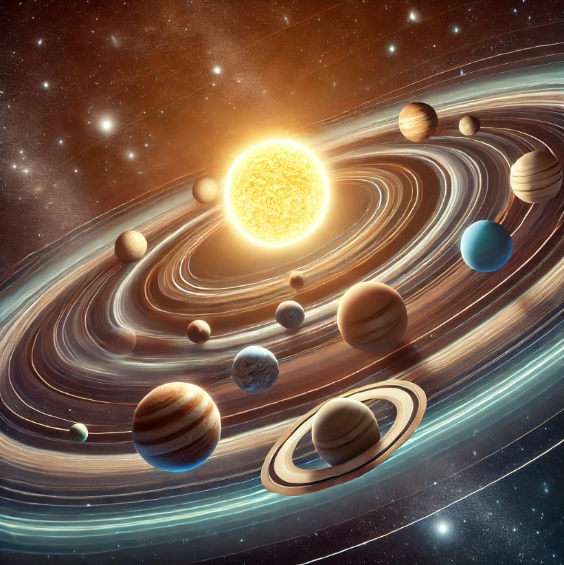

Преимущества Orrary

Интерактивные 3D-модели
Погрузитесь в захватывающий мир космоса с помощью интерактивных 3D-моделей.

Высококачественные изображения
Насладитесь потрясающими высококачественными изображениями небесных тел.

Подробная информация
Получите доступ к подробной информации о небесных телах, которая оживит Вселенную.